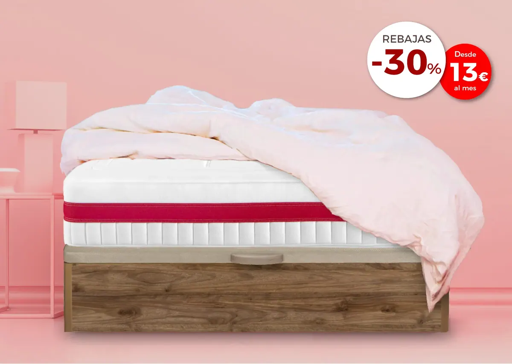

Descubre el nuevo colchón Viscolátex de Lo Mónaco

Nuevo colchón Viscolátex de Lo Mónaco
En Lo Mónaco deseamos agradecerte la confianza depositada durante más de veinte años. Para celebrar juntos el 25 aniversario, relanzamos el famoso colchón «Viscolátex» con la intención de que sigas invirtiendo en un descanso de calidad y al mejor precio como llevamos años haciendo en Lo Mónaco.
El Nuevo Colchón «Viscolátex» de Lo Mónaco llega completamente actualizado con los últimos avances en tecnología del descanso. Por menos de lo que crees tendrás la oportunidad de disfrutar de un descanso silencioso, revitalizante, saludable y con una adaptabilidad total. Este colchón «Viscolátex» ha sido diseñado pensando en que sea adaptable para todo tipo de morfologías y necesidades. Sigue leyendo, pues te lo contamos todo acerca de comprar el colchón «Viscolátex»: el único colchón que se adapta a ti y no al revés.
Ventajas del Viscolátex
Cuando se habla de un colchón viscolátex, se entiende aquel modelo cuyo núcleo se compone de dos elementos básicos: el viscoelástico y el látex. Estos dos materiales suponen un salto en cuanto a transpirabilidad, confortabilidad, regulación de la temperatura e higiene entre muchas otras prestaciones.
Si profundizamos más en las ventajas de comprar colchón «Viscolátex» tenemos, en primer lugar, la adaptabilidad. Este material ha supuesto una auténtica revolución en cuanto a tecnología del descanso, ya que al combinar estos dos elementos se puede obtener un colchón con unas propiedades inmejorables que sirve para evitar puntos de presión y sentir cómo es el colchón el que se adapta a ti y no a la inversa.
Cuando la adaptabilidad es perfecta, el resto de prestaciones no hacen más que mejorar las características que tendrá tu descanso. Una vez que te eches a la cama, gracias a la confortabilidad, encontrarás un colchón que es firme a la vez que cómodo y mullido sin llegar a ser desagradable por un exceso de hundimiento. Esto se da gracias a que el viscolátex proporciona el equilibrio idóneo entre firmeza y adaptabilidad, regalándote noches de descanso reparador que redundan en una mejor salud y mayor energía.
Comprar un colchón Viscolátex supone adquirir una pieza que en ocasiones puede requerir unos cuidados especiales que tienen que ver con la higiene del colchón. También hay que prestar una especial atención a modelos que puedan estar hechos con látex natural. Lo mejor es ventilar diariamente la habitación, así se orea y purifica el núcleo. También pueden ayudar las fundas para que no calen líquidos y cambiar las sábanas una vez en semana para mantener el colchón en un estado óptimo. Por último es también aconsejable dar una vuelta al colchón y girarlo.
Propiedades del Nuevo colchón Viscolátex
Las propiedades que tiene el nuevo colchón «Viscolátex» de Lo Mónaco han sido completamente revisadas para traer un colchón actualizado con los últimos avances en tecnología del descanso.
Te encantará cómo se adapta a ti brindando una mayor calidad en el sueño y en el descanso con la intención de que puedas tener el máximo de energía disponible para enfrentar las tareas del día siguiente. Además de la mejor tecnología en colchones, no dejes de mirar los accesorios que tienes disponibles en nuestra web. Ponemos a tu disposición almohadas, somieres, canapés, bajeras impermeables y un sinfín más de artículos para completar tu pedido.
Más adaptable
En primer lugar tenemos que es más adaptable. A la hora de desarrollar las capas, se han combinado de manera ingeniosa para que se adapte a cualquier persona suavemente. Esto ha sido posible gracias a la colaboración en el desarrollo entre Lo Monaco y el equipo de I+D Hilding Anders, primer fabricante europeo.
Más revitalizante
En el colchón «Viscolátex» la capa de viscoelástica, además de ser la mejor, ahora es más gruesa para reducir los cambios posturales que se den durante la noche, redundando en un mejor descanso y, por ende, en mayor energía al día siguiente.
Más termosensible
Se sirve de la temperatura corporal para adaptarse. De esta manera puede aliviar la presión del peso corporal sobre la superficie del colchón con la mejora en la circulación que conlleva.
Consejos para un mejor cuidado del colchón «Viscolátex»
A continuación te comentamos algunos trucos que conviene tener en cuenta para garantizar la máxima duración y en las mejores condiciones del nuevo colchón «Viscolátex» de Lo Mónaco.
En cuanto recibas el colchón, te recomendamos desembalar o en cualquier caso, antes de 7 días para que no pierda propiedades ni se deteriore. Como el colchón no se puede lavar, lo más recomendable es que uses un cubrecamas para evitar que calen los líquidos si se diera el caso.
Otra de las recomendaciones más habituales es que no se salte sobre el colchón porque podría deformarse su estructura y comenzar un proceso de deterioro. Esto también es extensible a dejar objetos punzantes o pesados encima del colchón. De la misma manera podrían perforar o deformar el colchón eliminando sus propiedades beneficiosas.
Cada 6 meses o cada año conviene girar el colchón para que no varíen las características físicas y volumétricas. Es también aconsejable utilizar un somier de lamas para que haya el mayo flujo de ventilación posible. La transpiración y aireación del colchón son dos de los elementos claves más determinantes a la hora de prolongar la vida útil del colchón. No obstante, no olvides que, como máximo, un colchón tiene una vida útil de 10 años. No es recomendable sobrepasar ese tiempo de uso debido a que puede ser perjudicial para la espalda y, sobre todo, para un descanso reparador y de calidad.
Comprar en Lo Mónaco
Si buscas colchones viscolátex de calidad, con un servicio de atención al cliente y postventa impecables, Lo Mónaco puede seguir siendo el mejor lugar donde comprar el nuevo colchón «Viscolátex» para seguir descansando como hasta ahora.
Durante estos más de 20 años a tu lado, hemos ido aprendiendo junto a ti cuáles son las principales necesidades y exigencias de los clientes en cuanto a descanso de calidad. Por este motivo podemos seguir siendo referentes a nivel nacional en todo lo que tiene que ver con los colchones, el descanso y los accesorios que también tenemos disponibles para ti.
Sigue confiando en nosotros, como ya han hecho más de 700.000 clientes, para seguir teniendo la mejor relación calidad-precio en el mundo del descanso. Además de este modelo de colchón «Viscolátex», tenemos disponible un catálogo muy extenso con todas las opciones que necesitas en el emplazamiento donde lo necesites. No dejes de echarle un vistazo para descubrir las increíbles ofertas y descuentos que tenemos para ti en un sinfín de productos.
Nuestro objetivo es que estés 100% satisfecho/a con tu compra, si no, te devolvemos el dinero.
Ahí no acaba todo: te ofrecemos una garantía de 10 años y facilidades en la financiación. Además, las entregas y recogidas serán gratuitas. No olvides que si tienes alguna duda respecto a las prestaciones del producto o sobre tu envío, puedes ponerte en contacto con nosotros para que te asesoremos en lo que necesites. Nuestro equipo (en donde hablan personas, no robots) estará encantado de atenderte y resolver cualquier cuestión respecto a este u otro modelo de colchón.
No te lo pienses más y compra ya el renovado colchón «Viscolátex» al mejor precio, ¡aprovecha el descuento antes de que se acabe!.